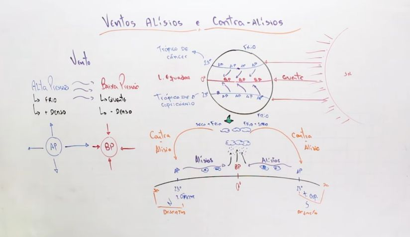

Geografia
26/04/2024
Aula 1 - Climatologia e Meteorologia
Slide 3 - Para começar
Qual é a importância da previsão
das condições meteorológicas em
seu cotidiano?
A previsão do tempo é importante para muitas áreas, tais como aviação, navegação,
agricultura, indústria, comércio, turismo, segurança, entre outras.
Slide 16 - Na prática
1. Explique a diferença entre tempo e clima. Qual é a principal
característica que diferencia esses dois conceitos?
Tempo é a condição atmosférica em um momento específico, enquanto clima é a média das
condições atmosféricas ao longo do tempo.
2. Na sua opinião, qual é a importância da meteorologia e da
climatologia? Como essas duas ciências contribuem para o estudo e a
compreensão dos fenômenos atmosféricos?
Meteorologia prevê o tempo futuro, enquanto a climatologia estuda padrões climáticos de
longo prazo, auxiliando na compreensão das mudanças climáticas e na tomada de decisões.
03/05/2024

Troposfera
Altura: Até 8-15 km.
Características: Onde ocorrem os fenômenos meteorológicos; contém 75% da massa atmosférica e
quase todo o vapor d'água.
Estratosfera
Altura: 15-50 km.
Características: Contém a camada de ozônio; temperatura aumenta com a altitude.
Mesosfera
Altura: 50-85 km.
Características: Temperatura diminui com a altitude; onde ocorrem as estrelas cadentes.
Termosfera
Altura: 85-600 km.
Características: Temperatura aumenta com a altitude; contém a ionosfera, importante para a
transmissão de ondas de rádio.
Exosfera
Altura: Acima de 600 km.
Características: A camada mais externa; partículas de gás são extremamente raras,
gradualmente se fundindo com o espaço.

10/05/2024
Aula 3 - Precipitação
Atividade
Pricipais características das nuvens apresentados na aula
- Cirrocumulus: Nuvens altas, pequenas e brancas, compostas por cristais de gelo, sem
precipitação.
- Cirrostratus: Nuvens altas e finas, cobrindo parcialmente o céu, com halo, sem
precipitação.
- Altocumulus: Nuvens médias, brancas ou cinza-claro, em grupos ou linhas, sem
precipitação intensa.
- Altostratus: Nuvens médias, cobrindo o céu com camada cinza ou azulada, causando
precipitação leve a moderada.
- Nimbostratus: Nuvens baixas e escuras, produzindo precipitação contínua e moderada a
forte.
- Stratocumulus: Nuvens baixas, brancas ou cinza, em camadas, causando precipitação leve.
- Stratus: Nuvens baixas, formando camada uniforme e cinza, com precipitação leve ou
chuvisco.
- Cumulus: Nuvens baixas e isoladas, brancas e fofas, geralmente sem precipitação.
- Cumulonimbus: Nuvens de tempestade, altas e imponentes, com potencial para tempestades
severas.
24/05/2024
Trabalho para Nota Bimestral
Entrega até o dia 14 de junho.
Tema: Equipamentos e tecnologias utilizados na meteorologia, construção e utilização de
equipamentos meteorológicos.
O trabalho deve responder às seguintes questões:
- Quais são os tipos de equipamentos meteorológicos?
- Qual a importância das estações meteorológicas?
- Qual é o papel do satélite na observação meteorológica?
Deve conter: Capa e fonte.
As informações estão no material digital aula 6 e 7.
Obs: Entrega com atraso terá desconto na nota.
Pode ser feito em duplas.
Aula 4 - Elementos e Controles Climáticos I
Em seu caderno, e com a orientação do seu professor, elabore um texto
indicando as diferenças entre controles e elementos climáticos.
Os controles climáticos são fatores externos que influenciam o clima de uma região, como latitude e altitude. Já os elementos climáticos são variáveis que caracterizam o clima de uma área, como temperatura e umidade. Em resumo, os controles determinam o padrão climático geral, enquanto os elementos descrevem o clima específico de uma região.